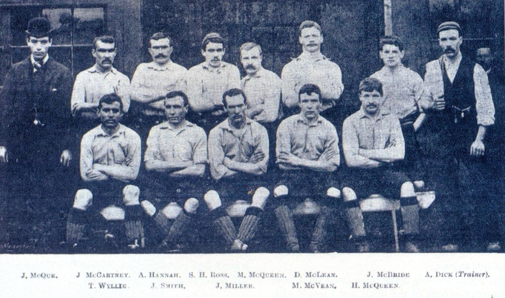

ก่อตั้งขึ้นตอน 3 มิถุนายน ค.ศ. 1892.
ประวัติสโมสรลิเวอร์พูล (ค.ศ. 1892–1959) (อังกฤษ: History of Liverpool F.C. (1892–1959)) เริ่มต้นเมื่อมีการก่อตั้งสโมสรใน ค.ศ. 1892 จนกระทั่งถึงการแต่งตั้ง บิลล์ แชงคลี เป็นผู้จัดการทีมใน ค.ศ. 1959
สโมสรฟุตบอลลิเวอร์พูล ก่อตั้งขึ้นเมื่อวันที่ 15 มีนาคม ค.ศ. 1892 ภายหลังความขัดแย้งระหว่างกรรมการบริหารสโมสรฟุตบอลเอฟเวอร์ตันกับประธานสโมสร จอห์น โฮลดิง ซึ่งเป็นเจ้าของสนามแอนฟิลด์ของสโมสร ข้อพิพาทเรื่องค่าเช่าสนามส่งผลให้เอฟเวอร์ตันย้ายไปที่ กูดิสันพาร์ค ซึ่งเป็นสนามฟุตบอลแห่งใหม่ของสโมสรที่ก่อสร้างแล้วเสร็จในปีเดียวกัน ทิ้งโฮลดิงไว้กับสนามที่ว่างเปล่า ดังนั้น เขาและเพื่อนๆ จึงก่อตั้งสโมสรฟุตบอลลิเวอร์พูลและเข้าร่วม แลงคาสเตอร์ลีก หลังจากคว้าแชมป์ลีกในฤดูกาลแรก ลิเวอร์พูลได้รับการยอมรับให้เข้าร่วม ฟุตบอลลีก ในฤดูกาล 1893-94 หลังจากการลาออกของ แอ็กคริงตัน ซึ่งเป็นสมาชิกผู้ก่อตั้งลีกและ Bootle หลังจากพ่ายแพ้ในการแข่งขันทดสอบหรือการแข่งขันเพลย์ออฟในปัจจุบัน
การแต่งตั้ง ทอม วัตสัน เป็นผู้จัดการทีมคนใหม่ในปี ค.ศ. 1896 ส่งผลให้สโมสรประสบความสำเร็จในช่วงแรก ลิเวอร์พูลคว้าแชมป์ดิวิชั่น 1 เป็นครั้งแรกได้สำเร็จในปี ค.ศ. 1901 และตามมาด้วยแชมป์ลีกอีกสมัยในปี ค.ศ. 1906 และในปี ค.ศ. 1914 สโมสรก็ไปถึงนัดชิงชนะเลิศ เอฟเอ คัพ เป็นครั้งแรก โดยแพ้ให้กับ เบิร์นลีย์ วัตสันเสียชีวิตกะทันหันในปี ค.ศ. 1915 ด้วย โรคปอดบวม หลัง สงครามโลกครั้งที่ 1 เริ่มต้นขึ้น สโมสรคว้าแชมป์ดิวิชั่น 1 อีก 2 สมัยในปี ค.ศ. 1922 และ ค.ศ. 1923 เมื่อฟุตบอลกลับมาแข่งขันอีกครั้งหลังสงครามโลกครั้งที่หนึ่งสิ้นสุดลง
การขยายความจุของอัฒจันทร์ Spion Kop ในช่วงทศวรรษที่ 1920 ทำให้ความจุของแอนฟิลด์เพิ่มขึ้น ในช่วงสงคราม สโมสรมักจะจบในกลางตาราง ลิเวอร์พูลกลายเป็นแชมป์ดิวิชั่น 1 อีกครั้งในปี พ.ศ. 2490 ในฤดูกาลแรกหลังสงครามโลกครั้งที่ 2 แต่หลังจากผลงานที่ย่ำแย่ สโมสรก็ตกชั้นสู่ดิวิชั่น 2 ในปี พ.ศ. 2497 เมื่อแชงคลีย์ได้รับการแต่งตั้งในปี พ.ศ. 2502 ลิเวอร์พูลก็อยู่ใน ดิวิชั่นสองมาห้าฤดูกาล
